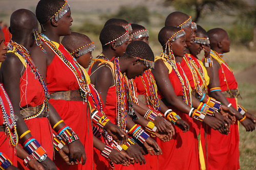
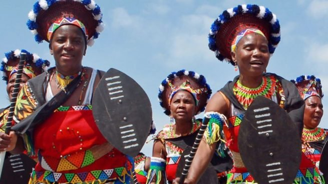
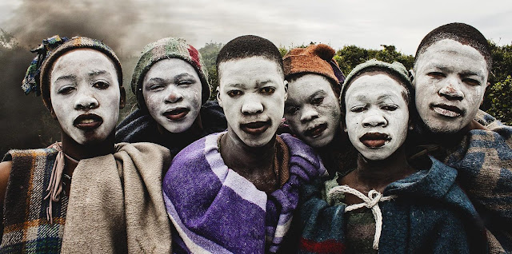
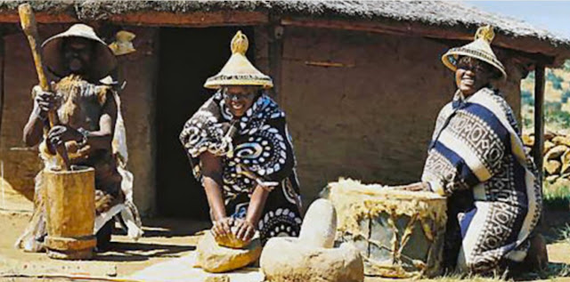
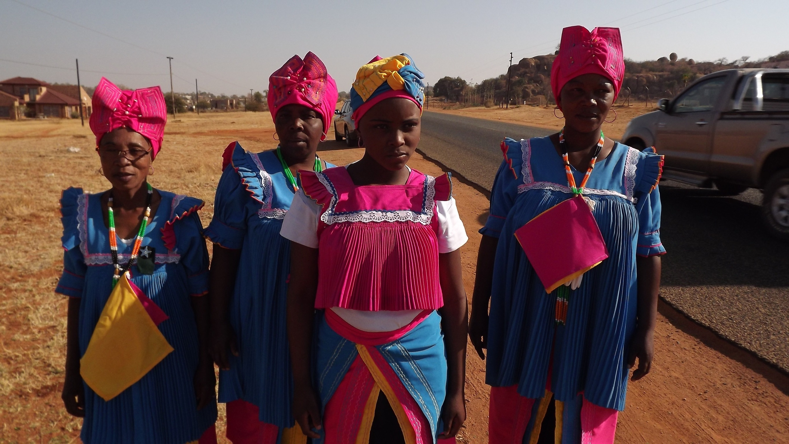
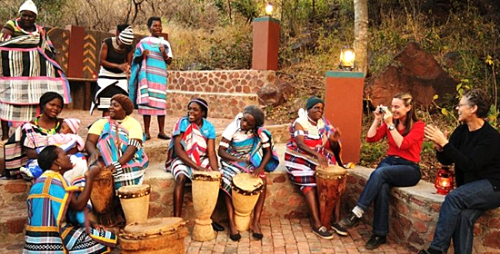
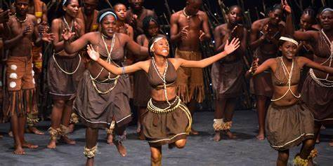
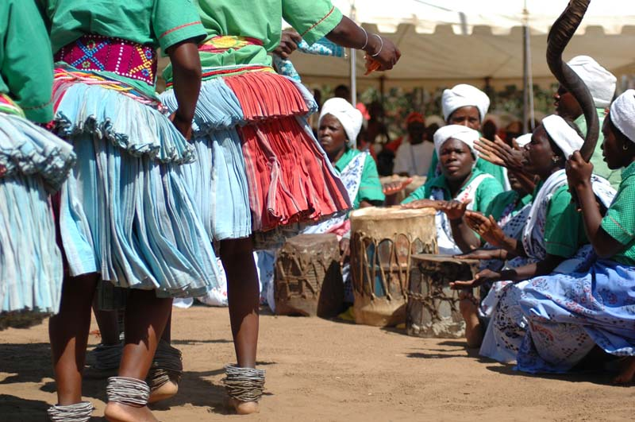
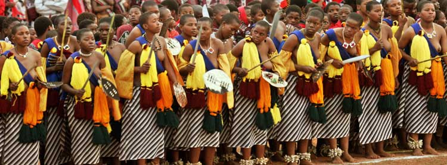
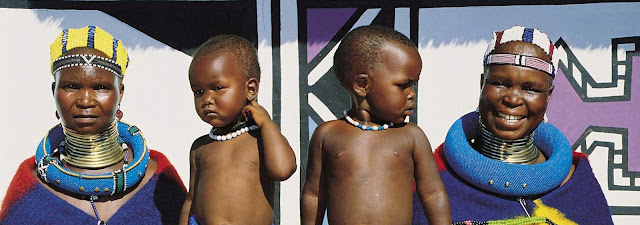

Principais grupos étnicos da África
O continente Africano tem vários grupos étnicos. A estimativa é que existam mais de 100 etnias na África, cada uma com sua cultura e dialeto próprios.
As divisões de grupos étnicos na África são consideradas complexas. Esses povos estão espalhados por todo o continente, e muitos vivem em tribos. Vamos conhecer agora, algumas das principais etnias africanas.
Zulu
O Zulus formam o maior grupo étnico do continente, bastante conhecido por suas belas contas coloridas e cestos, bem como outras pequenas esculturas. Vivem em territórios atualmente correspondentes àÁfrica do Sul, Lesoto, Suazilândia, Zimbábue e Moçambique. Apenas na África do Sul, a população de zulus foi estimada, em 1995, em 8.778 (o que corresponde a 22,4% da população total do país). Espalhados pelo restante do continente, o número de zulus chega a 400 mil. As mulheres cultivam a terra e as crianças são pastores. Os zulus moram em choças em formas de cúpulas, sem janelas e facilmente desmontáveis. Quando morrem são enterrados sentados, com os olhos voltados para a sua cabana.
Xhosa
é o segundo maior grupo étnico da África do Sul, contando com personalidades como Nelson Mandela, o arcebispo Desmond Tutu, o cantor Miriam Makeba (Mama Africa), e o duas vezes presidente da África do Sul, Thabo Mbeki. A população Xhosa concentra-se na região da Cidade do Cabo, a qual eles chamam de iKapa. Aos Xhosas durante o regime do apartheid foi negado a cidadânia sul-africana, fazendo com que estes fossem confinados em regiões que se auto-governavam. Estes “estados” chamados de Bantustan iam desde a Cidade do Cabo até o sul do que é hoje a Namíbia. Um dos seus rituais de transição (a circunsição) entre a juventude e a fase adulta para homens foi relacionado ao alastramento do HIV. Por essa política de discriminação que sofreram durante o apartheid, os Xhosas são umas das etnias mais pobres da África do Sul.
Basotho
O povo Basotho vive na África do Sul desde meados do século V em clãs disperços, e possuem uma população de 3,5 milhões na África do Sul. Os ancestrais do povo Basotho viveram na África Austral, desde o 5º século. A nação Basotho emergiu da piplomacia realizada em Moshoeshoe que reuniu clãs diferentes de Sotho-Tswana e houve a dispersão do povo Bosotho em toda a África do Sul no início do século 19. Hoje a maioria do povo vive em um país chamado Lesoto.
Bapedi
Pedi (também conhecido como Bapedi, Bamaroteng, Marota, Basotho, Sotho do Norte - em seu sentido mais amplo), tem sido um termo cultural / linguístico - anteriormente usado para descrever todo o conjunto de pessoas que falam diferentes dialetos da língua sotho que vivem na Província do Limpopo da África do Sul, mais recentemente, o termo "Northern Sotho" substituiu o "Pedi" para caracterizar esta coletividade de grupos.
Eles vivem espalhados em Gauteng, Limpopo, e Mpumalanga e contam com aproximadamente 4 milhões de pessoas. A grande mairoria dos Bapedi vivem em Limpopo, sendo praticamente 50% da população neste local. Na região de Johanesburg são 1,5 milhões de pessoas, enquanto que em Mpumalanga são mais 350 mil.
Venda
Os Vendas possuem aproximadamente um milhão de pessoas desta etnia espalhadas entre a África do Sul e o Zimbabwe. Este povo é originário do congo, e se especula que imigraram para a região fronteiriça entre Zimbabwe e a África do Sul seguindo o rio Limpopo durante a fase de expansão Bantu.
Tswana
Etnia encontrada em sua grande maioria na África do Sul, em Botswana, e em pequenas proporções no Zimbabwe e Namibia. A população de Botswana é composta pela maioria de Tswanas, mas é na África do Sul que encontra-se o maior número absoluto desta etnia.
Os Tswana compreendem vários agrupamentos, os mais importantes dos quais, numericamente falando, são os Hurutshe, Kgatla, Kwena, Rolong, Tlhaping e Tlokwa. Eles somavam cerca de quatro milhões na virada do século 21.
Tsonga
Tonga, tongas ou Tsonga people, abrangem a maior parte de África do sul, sendo eles Suazilândia, Moçambique, Malawi, Zâmbia e Zimbabwe. Nesses países, há regiões onde um ou mais idiomas e / ou dialetos são mais dominante. Por exemplo, na África do Sul, as pessoas Tsonga são encontrados principalmente nas províncias do Limpopo, Mpumalanga, KwaZulu-Natal e Gauteng , com populações menores em North-West e Free State.
Dentro destas províncias, há vilas e cidades onde eles são mais prevalentes, embora isso está mudando continuamente na nova África do Sul. A maioria ou todo o sul de Moçambique é habitada por pessoas Tsonga, diversamente nomeados como Copi, Rhonga, Ndzawu, Tonga, Shangana, e Tshwa. Historicamente e atualmente as pessoas Tsonga em Moçambique estão entre os rios Limpopo e Save.
Swazi
Eles habitam um pequeno trecho na fronteira entre a África do Sul, e um dos menores países do continente africano, a Suazilândia. Os swazis são uma tribo que ainda vive como se o tempo não tivesse passado. Muitas tradições curiosas e atos religiosas são seguidos à risca por este grupo, que, para muitos, parou no tempo.
Os swazis nunca desenvolveram a escrita em milênios de existência, e suas histórias foram transferidas de pai para filho ao longo dos anos em sua língua própria, o Swati, semelhante aos dialetos das nações Zulu e Xhosa. Como não há escrita, não há também nenhum registro deles antes da dominação que sofreram por longos anos pela tribo dos tarsitas.
Ndebele
O povo Ndebele é um grupo étnico Africano localizado na África do Sul e no Zimbabwe. A maior parte deles encontra-se em Bronkhorstspruit. As origens do povo Ndebele ainda são um mistério. A etnia conta com uma população em torno de 700 mil pessoas.
Os Ndebele ao contrário de muitas outras tribos da África do Sul, conseguiram preservar as suas tradições ancestrais ao longo do século. O que todos nós sabemos é aquilo que podemos ver, e o que vemos é arte e muita cor nas suas casas. Uma combinação de arquitectura e arte únicas são a principal característica deste belo povo africano. As mulheres de Ndebele lembram as "mulheres girafa" da Tailândia, pois usam colares em forma de aro no pescoço, bem como nas pernas e braços.